青柠光电创新工坊正式揭牌成立
成立揭牌仪式暨研学主题党日活动在学校南校区举行。长春理工大学教务处副处长王文晶教授与北京理工大学曹杰教授共同为工坊揭牌，两校师生代表齐聚现场。红绸落下，这支由教师牵头指导、研究生协同推进、本科生深度参与的青年创新队伍，正式迈入实体化运营新阶段。


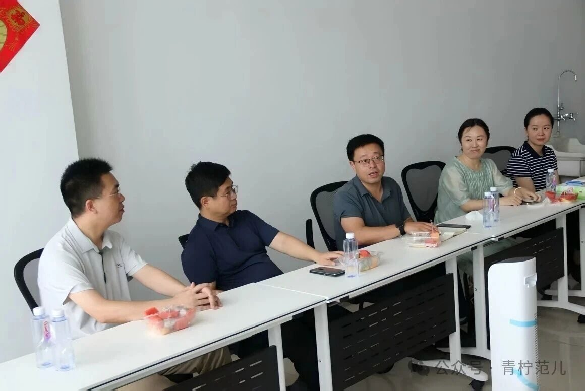
与北京理工大学光电智能感知工作室深度交流
北京理工大学光电智能感知工作室总负责人刘绍桐介绍了工作室的组织架构与运营模式；工坊本科生总负责人李新可汇报第一轮具身智能产业线上调研成果。两校师生围绕工作室运营经验、科研方向、校企合作与学生成长展开深度交流，在沟通中碰撞新的火花。

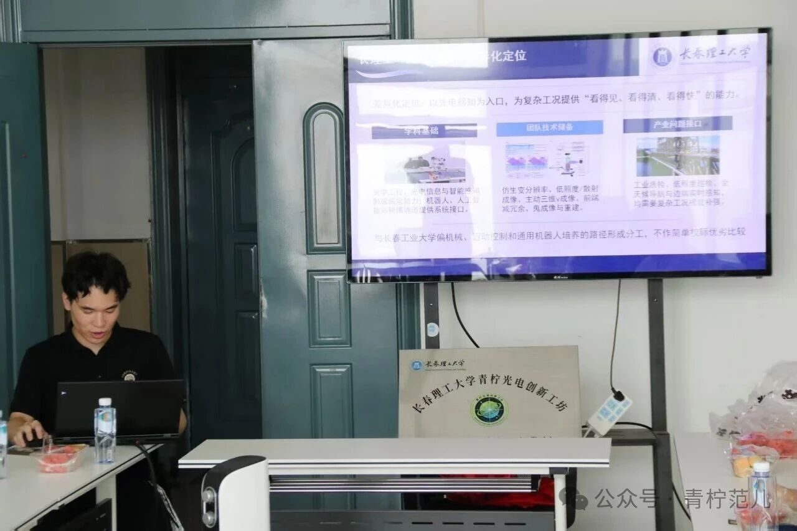
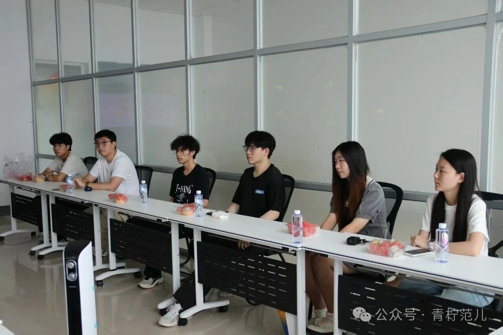
王大珩故居现场研学
师生一行前往王大珩故居，在讲解员带领下通过历史照片、文献史料与实物展品，回顾先生求学报国、艰苦创业、科研攻关和教书育人的一生。对青年光电人而言，这不仅是一场专业溯源的历史教育，更是一堂关于使命担当与精神传承的思政公开课。

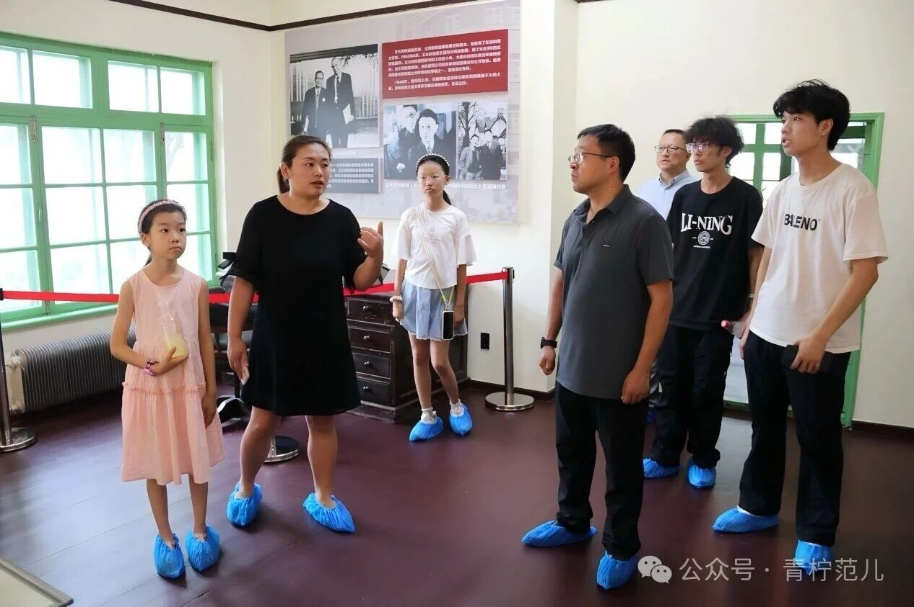
具身智能产业调研 · 长春未来机器人大会
完成首轮具身智能产业调研，产出企业画像梳理、产业链与区域资源盘点、高校团队对标分析、已有技术与适用场景匹配验证等成果；并赴东北亚国际展览中心，就 2026 长春未来机器人大会开展实地调研与行业交流，进一步厘清吉林省具身智能产业资源布局。

完成整体架构搭建：四部协同 + 课题执行组
完成工坊职能部门与课题组的架构划分，明确各部门成员分工，搭建起部门运营与课题组协作联动的运行框架——让研究之外的工作也有温度和责任，让每一次行动都要留下成果。
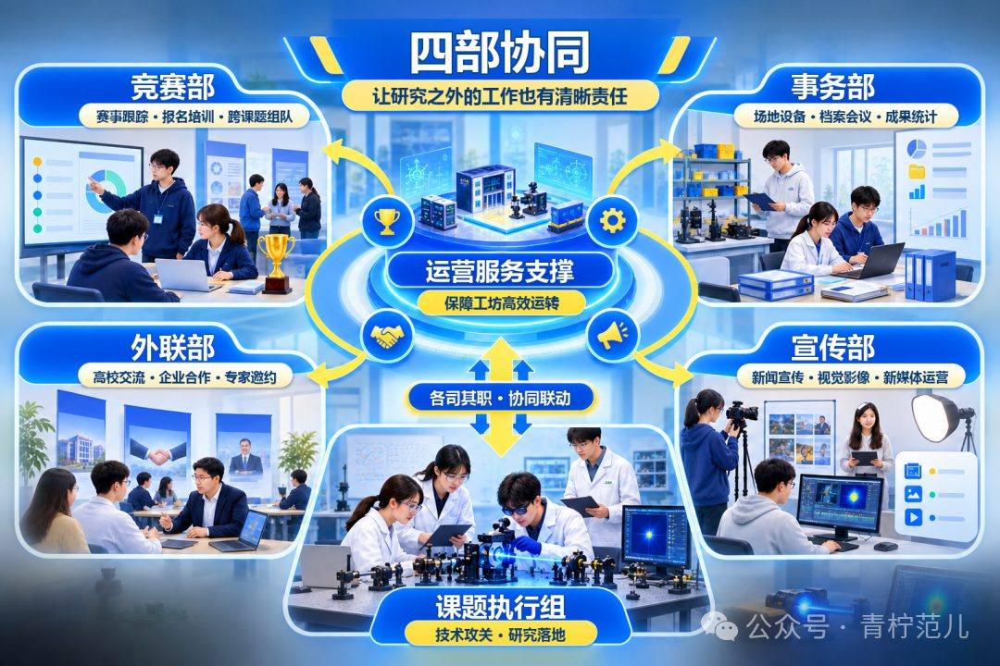
华为专场宣讲会 · 接轨产业前沿
工坊联合华为开展专场宣讲，围绕前沿技术赛道、CANN 算子挑战赛、昇腾 AI 生态与实习就业机会展开分享。成员们近距离了解产业真实需求与技术演进方向，为课题选择与竞赛备战拓宽了视野。

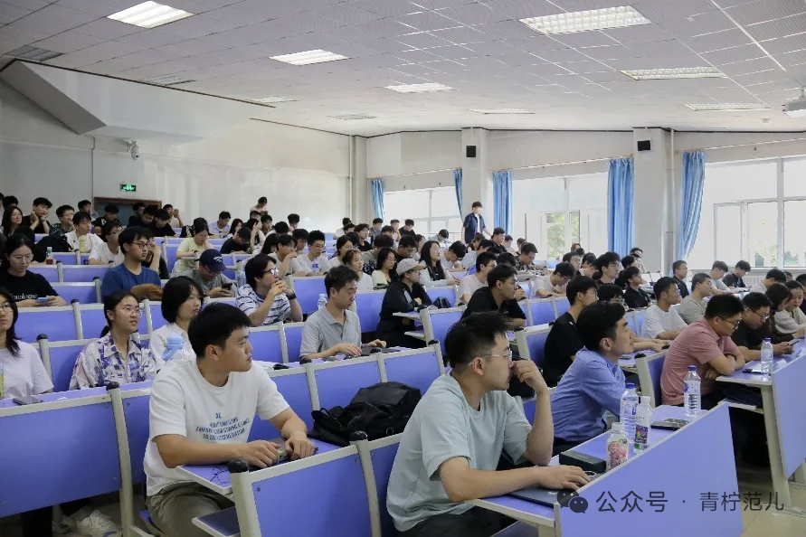
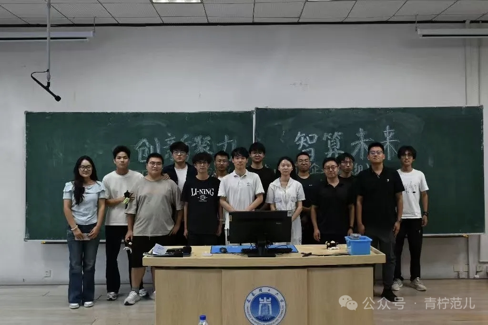
华为 CANN 算子挑战赛 · 线下专题培训
针对华为 CANN 算子挑战赛开展线下专题培训，帮助成员系统掌握昇腾 AI 计算架构、算子开发流程与性能优化方法。工坊以赛促学，在真实技术挑战中锤炼工程能力。

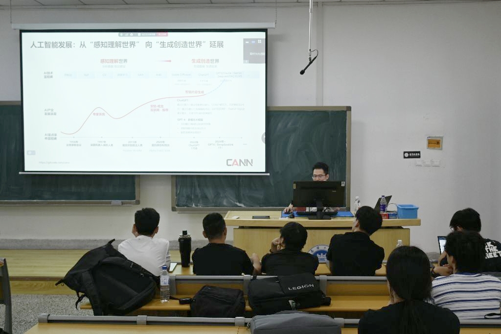
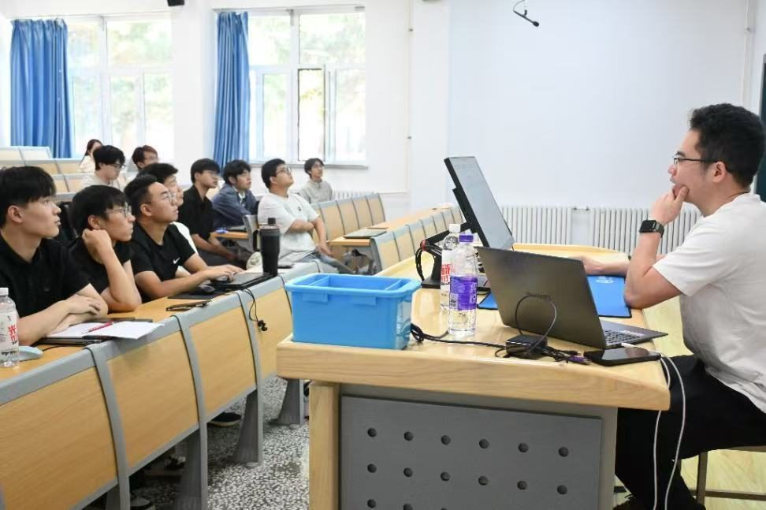
榜样宣讲会 · 以坚毅为根，受汗水浇灌
工坊举办"以坚毅为根，受汗水浇灌，我的科创之路"主题榜样宣讲会，邀请优秀学长学姐分享科创竞赛与成长经历。以真实故事激励成员以汗水浇灌梦想，在科创道路上坚毅前行。

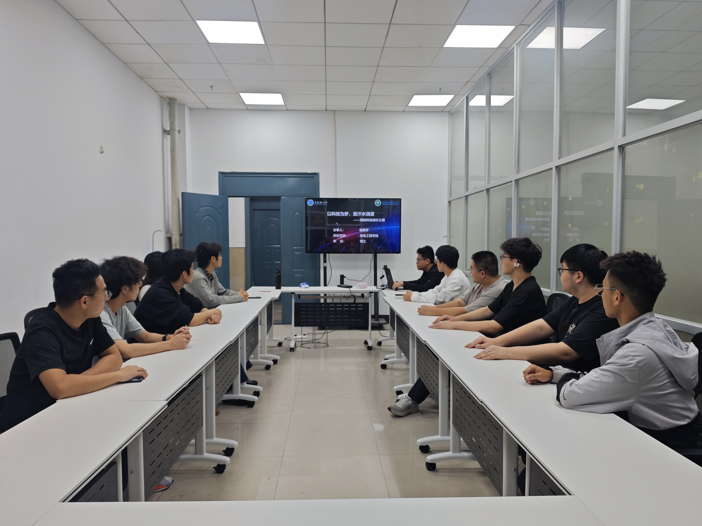
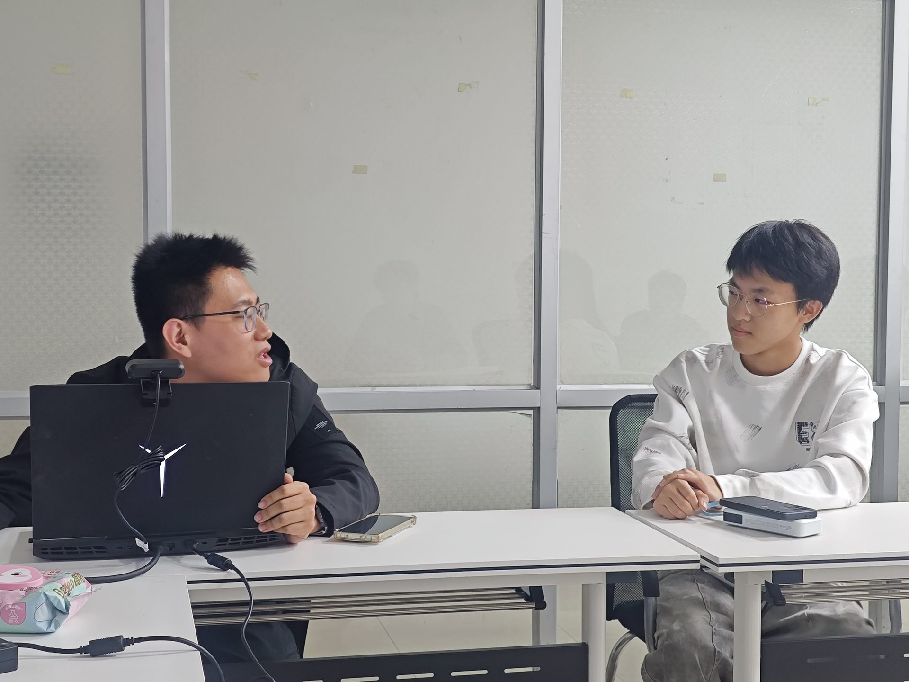
下一步：持续跟踪各类科创赛事信息，推进具身智能产业第二轮线下调研及纳新工作，深化与校内外教师团队、其他院校工作室及企业单位的交流合作。
和我们一起书写下一段故事